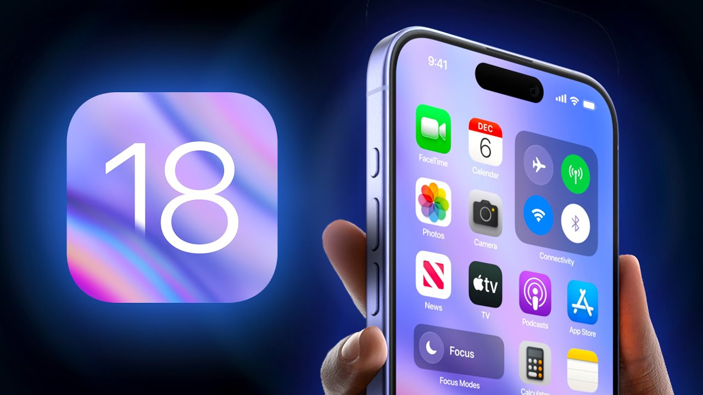

¡Adiós a los Robos! iOS 18 Revoluciona la Seguridad del iPhone
Apple ha lanzado iOS 18 con una nueva funcionalidad diseñada para combatir el despiece de teléfonos robados. Esta actualización incluye medidas de seguridad que dificultan la descomposición de los dispositivos y su venta en el mercado negro.
El nuevo sistema permite a los usuarios registrar sus dispositivos en un sistema central, lo que hace que cualquier intento de desarmar un iPhone robado sea más fácil de rastrear. Además, la actualización incluye alertas para que los usuarios puedan detectar si su teléfono ha sido manipulado o cambiado.
Con esta iniciativa, Apple busca no solo proteger a sus usuarios, sino también reducir el robo de teléfonos y su reventa. Expertos en seguridad han elogiado el enfoque de la compañía, resaltando que esta medida podría sentar un precedente para la industria.
Esta característica se suma a otras implementadas en iOS 18, que refuerzan la privacidad y la seguridad del usuario, reafirmando el compromiso de Apple con la protección de sus dispositivos y clientes.
La nueva tecnología implementada en iOS 18 se llama "Activation Lock Enhanced". Este sistema avanzado utiliza un algoritmo de identificación único que vincula el iPhone a la cuenta de iCloud del propietario. Cuando un dispositivo es robado, la funcionalidad bloquea automáticamente el acceso y desactiva las funciones que permiten la reconfiguración del hardware, dificultando su despiece.
La tecnología "Activation Lock Enhanced" se implementó oficialmente con el lanzamiento de iOS 18, que se hizo disponible para los usuarios en septiembre de 2023. Desde esa fecha, todos los nuevos iPhones que se actualicen a este sistema operativo cuentan con estas medidas de seguridad integradas. Si tienes un iPhone compatible, puedes activar la función y beneficiarte de estas protecciones inmediatamente tras la actualización.
Además, cada componente del iPhone tiene un número de serie único que se registra en la base de datos de Apple. Si alguien intenta reemplazar piezas en un dispositivo robado, el sistema enviará alertas automáticas al propietario original y a las autoridades, aumentando las posibilidades de recuperación. Esta tecnología no sólo disuade a los ladrones, sino que también ofrece a los usuarios un nivel de protección sin precedentes, manteniendo la integridad de sus dispositivos. Con "Activation Lock Enhanced", Apple se posiciona a la vanguardia de la seguridad móvil.